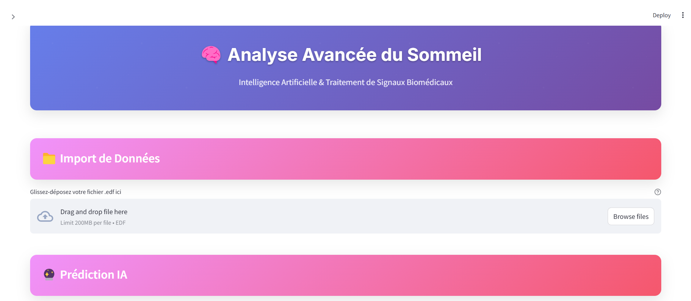
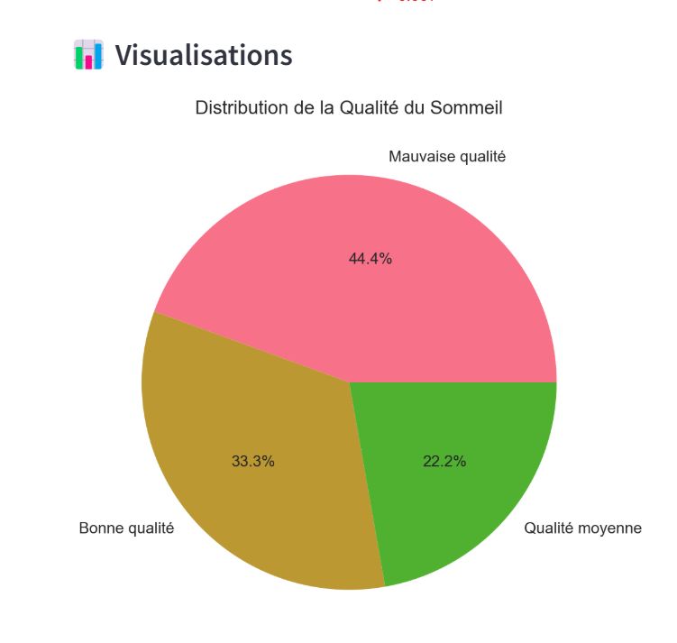
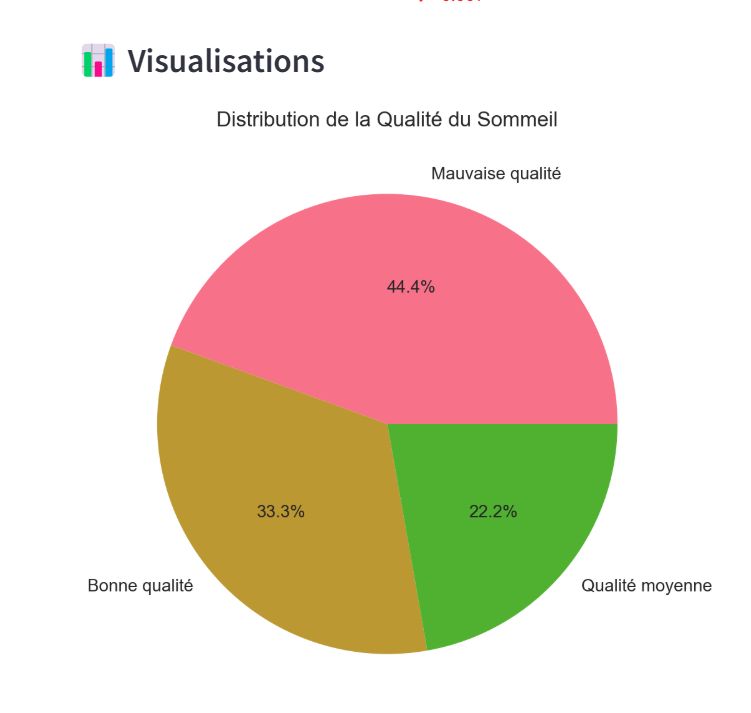

Application Streamlit
Application sleep_app pour prediction des troubles de Sommeil
Brève description de votre application Streamlit, son objectif et ses fonctionnalités principales.
Fonctionnalités
📠Import de fichiers EDF : Chargez vos enregistrements de sommeil
📊 Visualisation interactive : Explorez vos signaux EEG/EMG avec Matplotlib
🌊 Analyse spectrale : Analysez les bandes de fréquences cérébrales (Delta, Theta, Alpha, Beta, Gamma)
📈 Statistiques détaillées : Moyennes, écarts-types, RMS par canal
🔮 Prédiction de signaux : Utilisez l’IA pour prédire les signaux futurs
📥 Export des résultats : Téléchargez vos analyses et rapports
Prediction Des troubles : Predire les troubles de sommeil a partir des predictions de EEG/EMG
Installation et utilisation
Prérequis
pip install streamlit
pip install pandas
pip install numpy
pip install tensorflow
pip install matplotlib
pip install seaborn
Installation de l’application
Télécharger les fichiers depuis : https://github.com/maryamamri/sleep-disorder-detection/commit/d8ec1f1668ba38c364cdc465f727913eadab31d6
Extraire l’archive
lancer l’app
Lancement
streamlit run sleep_app.py
L’application sera accessible à l’adresse : http://localhost:8501
Captures d’écran
C’est l’overview de l’application
{kind=link}
Resultat des troubles de sommeil
{kind=link}
Resultat De NLP Analyseur de sommeil
 

{kind=link}
{kind=link}

Utilisation
Étape 1 : Importer un fichier .edf qui contient les signaux biomédicaux
Étape 2 : Lancer la prédiction avec le modèle personnalisé
Étape 3 : Cliquer sur “Analyser les troubles du sommeil†pour afficher les troubles futurs
Dépannage
Problèmes courants
Erreur de port : Vérifier que le port 8501 est libre
Dépendances manquantes : Installer les packages requis